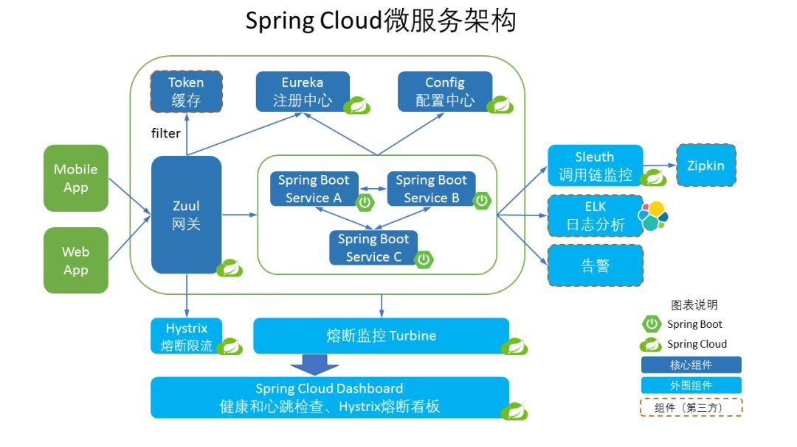

1. 简介¶
Spring Cloud是一个基于Spring Boot实现的微服务架构开发工具。给出了在实际应用中出现各种问题的解决方案和开源框架。
基础组件:
- Spring Cloud Eureka: 服务治理组件,包含服务注册中心、服务注册与发现机制的实现。
- Spring Cloud Hystrix: 容错管理组件，实现断路器模式，帮助服务依赖中出现的延迟和为故障提供强大的容错能力。
- Spring Cloud Ribbon: 客户端负载均衡的服务调用组件。
- Spring Cloud Feign: 基于Ribbon和Hystrix的声明式服务调用组件。
- Spring Cloud Zuul: 网关组件，提供智能路由、访问过滤等功能。
- Spring Cloud Stream: 消息驱动事件模型。
- Spring Cloud Security: 安全工具包，提供Zull代理中对OAuth2请求对中继器。
- Spring Cloud Config: 配置管理工具，可以实现应用配置的外部化存储，并支持配置信息刷新、加密/解密。